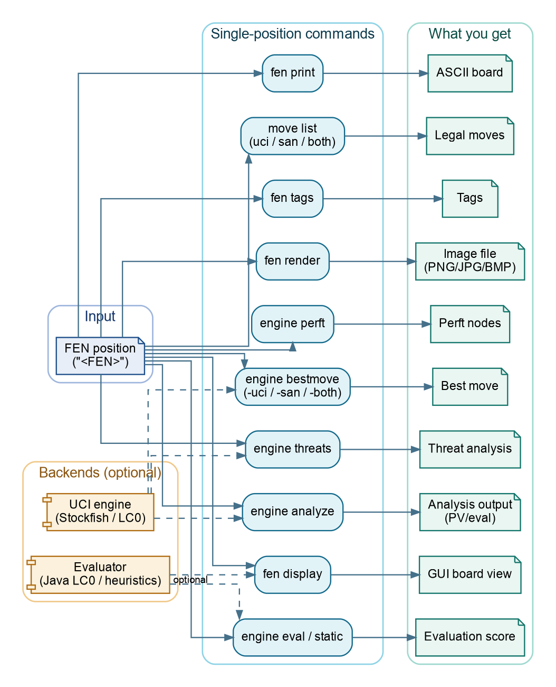

ChessRTK Wiki
Welcome to the ChessRTK documentation. This wiki is the project handbook: it starts with installation and first commands, then moves into configuration, engine workflows, mining, datasets, publishing, architecture, and maintenance.
For a website-style version with sidebar navigation and readable page layout, open https://LenniAConrad.github.io/chess-rtk/.
If the launcher is not installed, replace crtk <command> ... with java -cp out application.Main <command> ... after building the project.
Start Here
- Getting started - build, install, verify, and run the
first useful commands
- FAQ - practical answers for new users
- Use cases - workflow paths by role or job
- Command cheatsheet - fastest path from goal to command
- Command reference - grouped CLI surface and options
- Example commands - copyable command recipes
- Troubleshooting - common setup and runtime failures
Guides For Users
- Build and install
- Configuration
- Running engines
- LC0 UCI engine and Java evaluator
- Quality and testing
- Outputs and logs
- Support
Workflows
- Mining puzzles
- Filter DSL
- Datasets
- Book publishing
- Piece and position tags
- T5 tag-to-text pipeline
- AI agents and automation
Developer Documentation
Capability Map
| Task | Main commands | Docs |
|---|---|---|
| Validate, normalize, and print positions | fen validate, fen normalize, fen print |
Getting started, Command reference |
| List, convert, and apply moves | move list, move to-san, move to-uci, move after, move play |
AI agents and automation, Command reference |
| Verify move generation | engine perft, engine perft-suite |
Architecture, Development notes |
| Analyze with UCI engines | engine analyze, engine bestmove, engine threats, engine uci-smoke |
Configuration, Troubleshooting |
| Search in-process | engine builtin, engine java |
In-house Java engine |
| Mine and export puzzles | puzzle mine, puzzle pgn, record files |
Mining puzzles, Filter DSL |
| Tag positions and lines | fen tags, puzzle tags, record tag-stats |
Piece and position tags |
| Export training data | record dataset npy, record dataset lc0, record dataset classifier |
Datasets |
| Render diagrams and books | fen render, book pdf, book render, book cover |
Book publishing |
| Automate safely | doctor, config validate, deterministic move and bestmove commands |
AI agents and automation |
Architecture At A Glance

ChessRTK is built around one shared Java position model. The same legality and notation code drives the CLI, perft validation, built-in search, tagging, dataset export, rendering, GUI tools, and publishing output.
Quick Verification
mkdir -p out
javac --release 17 -d out $(find src -name "*.java")
java -cp out testing.CoreMoveGenerationRegressionTest
java -cp out application.Main move list --startpos --format both
java -cp out application.Main engine builtin --startpos --depth 3 --format summaryFor a broader pass:
./scripts/run_regression_suite.sh recommendedProject Policy Notes
- Java source and shell scripts are tracked.
- Local analysis dumps, models, generated PDFs, and build output are local
artifacts and should stay out of git.
- UCI engines and model weights are optional. Core FEN, move, perft, and
classical built-in search commands run in-process.
- Wiki pages describe implemented behavior unless a page is explicitly marked
as roadmap or planning material.